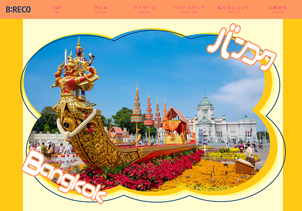

WORKS
制作物

- 概要
- 学校のグループ制作の課題で作成した、タイ バンコクの観光サイト。
- 使用ツール
- Illustrator / Photoshop / Visual Studio Code
- 制作期間
- 0.5か月(2026年3月中旬〜4月上旬)
デザイン 4日 / コーディング 7日
- 対応範囲
- カンプ制作 / 構成 / レイアウト / 画像補正 / デザイン / コーディング
- 概要
-
- 依頼側と受注側の両方をそれぞれのグループで担当し、
- グループメンバーで3人で手分けしてページの担当を決めて作成。
- 課題
-
- 依頼を頂いてから、先方からの要望、原稿、写真などを使用し
- ポップなデザインになるように考えサイトの雰囲気やトンマナなどを決め、
- デザイン担当とコーディング担当とページの役割を決めて制作を進める。
- 感想
-
- チームで手分けをしてwebサイトの制作を出来たのはとても良い経験になった。
- 無事にサイトの納品ができてよかった。
- 担当箇所
-
- TOPページ デザイン少し コーディング / POWERSPOTページ デザイン コーディング